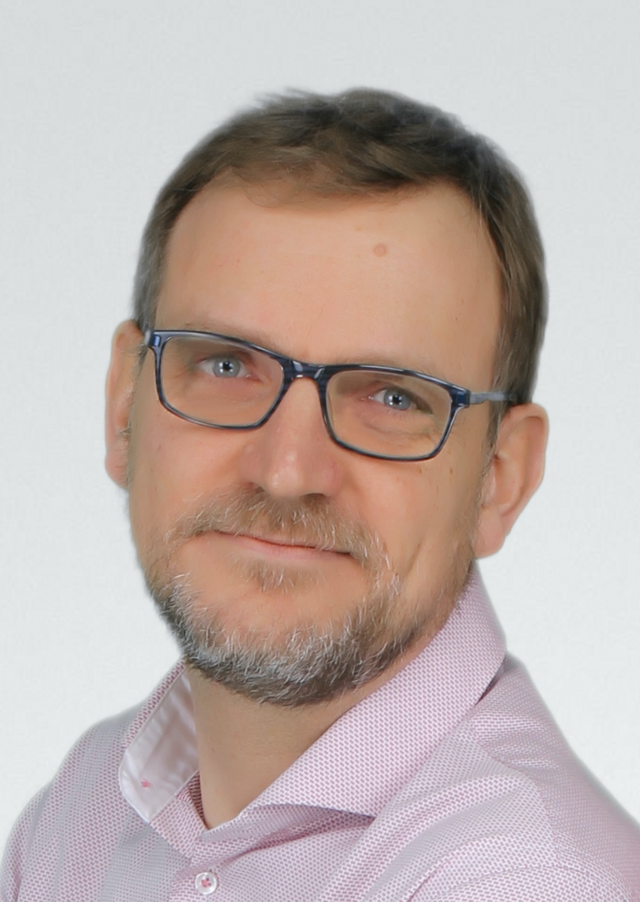

Overview
There is no questioning, nowadays, the importance of Knowledge Graphs, for building insight from the overwhelming abundance of data produced by organizations and their environment. There is much debate, on the other hand, about what the best tools are to build such Knowledge Graphs. Semantic Graphs, based on RDF and the principles of Linked Data, rely on solid theoretical foundations for reasoning with ontologies, and on IRIs and shared vocabularies for Web scale interoperability. Property Graphs, as implemented in a number of commercial and open-source systems, provide a flexible and intuitive data model, coupled with efficient traversal-based query languages and analytics tools.
The goal of this workshop is to report and share experiences from industry and academia, on using, comparing, and bridging the gap between these two kinds of graphs. The expected outcome is a better understanding of the relative strengths and weaknesses of the two paradigms, and the emergence of tools and methods allowing to get the best of both worlds.
This workshop will be collocated with SEMANTiCS 2021 EU.
Call for Papers
Submission
- The workshop accepts two kinds of submissions: long papers (15 pages maximum, including references) and short papers (6 pages maximum, including references).
- Submissions should follow the guidelines of the Springer LNCS format.
- Papers have to be submitted electronically via Easychair: https://easychair.org/conferences/?conf=scg2021
- Submissions must be in English.
- Submissions are not anonymous.
Important Dates
Papers due: Monday, 28 June 2021 Thursday, 08 July 2021, 23:59 AoE
Notification of accepted papers: Friday, 23 July 2021 Wednesday, 04 August 2021
Final papers due: Wednesday, 1 September 2021
Workshop date: 6 September 2021, 9:00-12:20 CEST (click to check in your timezone)
Publications
We intend to publish the accepted papers on CEUR.
Keynote
Property Graph Schema Working Group: where we are today, and what’s next
The Property Graph Schema Working Group (PGSWG) is a community working group that was set up in 2018 under the umbrella of the Linked Data Benchmark Council (LDBC), to support the upcoming ISO/IEC standards for managing property graphs: GQL. The PGSWG members are a mix of academia and industry. The goal of PGSWG is to discuss the Property Graph data model and the schema language that will describe instances of this data model. Discussions in the group cover topics such as the basic Property Graph data model, property types, subtyping, null values, key constraints and cardinality constraints. In this talk, we will provide the current status of its discussions and where they might be going in the near future.
Our speakers
 Jan Hidders is currently lecturer at Birkbeck, University of London. Before this he was associate professor at the Vrije Universiteit Brussel, and assistant professor at the Delft University of Technology. In the past his research has focused on data management, and specifically on three types of data models: graph data models, JSON and conceptual data models such as Entity-Relationship models and fact-based models such as ORM2. For graph data models he has studied graph query languages, both theoretically to investigate their expressive powers, but also practically to see how they can be effectively and efficiently implemented, both in distributed and non-distributed settings. He is currently co-chairing the Property Graph Schema Working Group, that is managed under LDBC, the Linked Data Benchmarking Council, and a member of the board of directors of LDBC representing Birkbeck college.
 Juan F. Sequeda is the Principal Scientist at data.world. He joined through the acquisition of Capsenta, a company he founded as a spin-off from his research. He holds a PhD in Computer Science from The University of Texas at Austin.
Juan F. Sequeda is the Principal Scientist at data.world. He joined through the acquisition of Capsenta, a company he founded as a spin-off from his research. He holds a PhD in Computer Science from The University of Texas at Austin.
Juan is the recipient of the NSF Graduate Research Fellowship, received 2nd Place in the 2013 Semantic Web Challenge for his work on ConstituteProject.org, Best Student Research Paper at the 2014 International Semantic Web Conference, the 2015 Best Transfer and Innovation Project awarded by the Institute for Applied Informatics and nominated two additional times for best paper at ISWC. Juan is on the Editorial Board of the Journal of Web Semantics, Advisory Board of Patterns Journal, member of multiple knowledge graph and AI program committees (ISWC, ESWC, WWW, AAAI, IJCAI), organizer of various academic and industry conferences and general chair of The Web Conference 2023.
Juan’s research and industry work has been on designing and building Knowledge Graph for enterprise data integration where he has researched and developed technologies for semantic and graph data virtualization, graph data modeling, schema mapping and data integration methodologies. Juan's goal is to reliably create knowledge from inscrutable data. Wearing his scientific hat, his research interests are at the intersection of Logic and Data for (ontology-based) data integration and semantic/graph data management. Wearing his business hat, Juan does business strategy, technical sales and works with customers to understand their problems to translate back to R&D. Juan strives to build bridges between academia and industry as the current chair of the Property Graph Schema Working Group of the Linked Data Benchmark Council (LDBC), past member of the LDBC Graph Query Languages task force and past invited expert member and standards editor at the World Wide Web Consortium (W3C).
Schedule Detail
The workshop will take place on Monday 6 Septembet 2021. All times below in CEST.
| 9:00 | Introduction |
|---|---|
| 9:15 | Keynote: Property Graph Schema Working Group: where we are today, and what’s next |
| 10:00 | Q&A |
| 10:15 | Coffee break |
| 10:45 | First paper session |
| Graph? Yes! Which one? Help! (O. Lassila et al.) | |
| Knowledge Graph Publication and Browsing Using Neo4J (G. Atemezing et al.) | |
| Q&A | |
| 11:30 | Second paper session: |
| Digital Transformation using chunks as a simple abstraction above triples and property graphs (D. Ragget) | |
| PREC: Semantic Translation of Property Graphs (J. Bruyat et al.) | |
| Using automotive property graph based data models in a knowledge graph (A. O'Mahony et al.) | |
| Q&A | |
| 12:30 | Workshop end |
Location
Co-located with SEMANTiCS 2021
Amsterdam & Online
Organization
Organizing Committee
- Pierre-Antoine Champin, ERCIM/W3C
- Pierre-Antoine Champin is a W3C fellow, and an associate professor in Computer Science at Universite de Lyon (France), currently in a sabbatical at ERCIM. His main research interests are Knowledge Representation and the Semantic Web. He was involved in a number of Semantic Web related standardization groups, including LDP, RDF 1.1 and JSON-LD 1.1 (as an editor). Recently, he lead a Community Group effort around the specification of RDFstar, an evolution of RDF aiming at bridging the gap with Property Graphs.
- David Bowden, Dell Technologies
- David Bowden is a Principal Research Scientist with Dell Technologies in its ORO European research group in Ireland. His primary areas of research are semantic models, IoT and edge to cloud orchestration. He has a M.Sc. in Artificial Intelligence and another in Cloud Computing. Prior to joining Dell Technologies, David worked in a broad range of industries from Airlines to Finance, Public Utilities to Broadcasting, and has has over 40 years experience in the IT industry.
Program Committee
- James Anderson (datagraph)
- Ghislain Auguste Atemezing (Mondeca)
- Jerven Bolleman (Swiss Institute of Bioinformatics)
- Angela Bonifati (Univ. of Lille 1 and Inria)
- Arnaud Castelltort (Montpellier)
- Jos De Roo (UGent)
- Bob Ducharme (sel)
- George H. L. Fletcher (Eindhoven University of Technology)
- Olaf Hartig (Linköping University)
- Gregg Kellogg
- Pavel Klinov (Stardog Union)
- Ora Lassila (Amazon Web Services)
- Maxime Lefrançois (MINES Saint-Etienne)
- Franck Michel (Université Côte d’Azur, CNRS, I3S, France)
- Marco Neumann (KONA)
- Blake Regalia (University of California, Santa Barbara)
- François Scharffe (Knowledge Graph Conference)
- Andy Seaborne (Apache Software Foundation)
- Dominik Tomaszuk (University of Bialystok, Institute of Informatics)
- William Van Woensel (University of Dalhousie)
- Peter Winstanley (Semantic Arts)